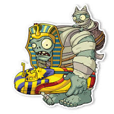

zombisteins
Aplasta plantas de los jugadores en lugar de comerlos. Debido a que el Zombiestein puede aplastar las plantas, es capaz de destruirlo todo y una vez que un Zombistein ha perdido una gran parte de su salud lanzará su zombidito A veces aparece con un poste en la mano y otras con una señal
El Zombistein Momificado es uno de los Zombisteins de Plants vs Zombies 2. Este zombi tiene la habilidad de usar su sarcófago para matar las plantas. Una vez que haya recibido la mitad de daño, lanza a su Zombidito Momia por encima de tus plantas
El zombistein verdugo es el zombistein con mas fuerza de todos y todos le tienen mucho miedo, va acompañado de un zombidito el cual considera su unico amigo
MAS ZOMBIS